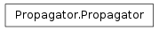
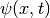
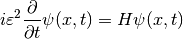
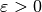
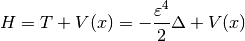

Propagator¶
About the Propagator class¶
The WaveBlocks Project
@author: R. Bourquin @copyright: Copyright (C) 2010, 2011, 2012, 2013, 2014 R. Bourquin @license: Modified BSD License
Inheritance diagram¶

Class documentation¶
- class WaveBlocksND.Propagator¶
Propagators can numerically simulate the time evolution of quantum states  as described by the time-dependent Schroedinger equation

where the semi-classical scaling parameter  is already included. The Hamiltonian operator
 is defined as
is defined as
- get_number_components()¶
Returns: The number  components of .
components of .Raise : NotImplementedError This is an abstract base class.
- get_potential()¶
Returns the potential
 used for time propagation.
used for time propagation.Returns: A MatrixPotential subclass instance.
- post_propagate()¶
Given the wavefunction
 at final time
at final time  ,
perform some computations exactly once after running the ordinary
time propagation and before each time simulation data will be saved.
,
perform some computations exactly once after running the ordinary
time propagation and before each time simulation data will be saved.This method does not raise an exception but instead just does nothing and returns.
- pre_propagate()¶
Given the wavefunction
at initial time  ,
perform some computations exactly once before running the ordinary
time propagation and after each time simulation data was saved.
,
perform some computations exactly once before running the ordinary
time propagation and after each time simulation data was saved.This method does not raise an exception but instead just does nothing and returns.
- propagate()¶
Given the wavefunction
at time  , calculate
the new at time
, calculate
the new at time  . We do exactly one timestep
of size
. We do exactly one timestep
of size  here.
here.Raise : NotImplementedError This is an abstract base class.